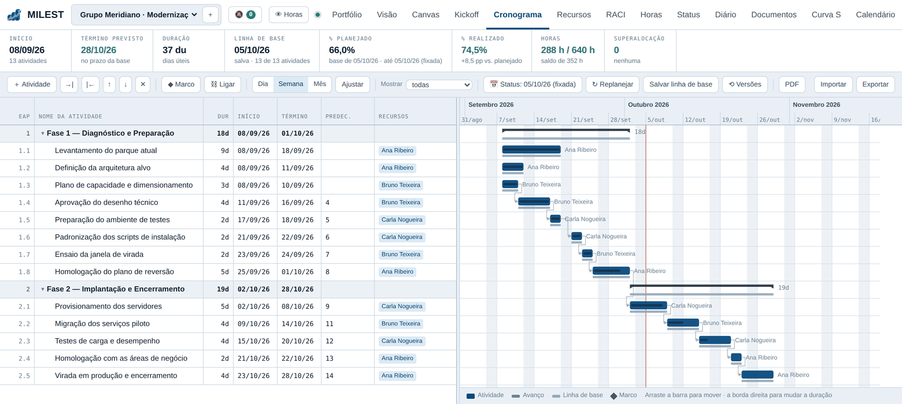
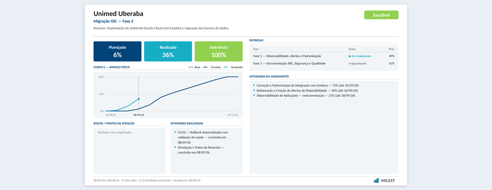
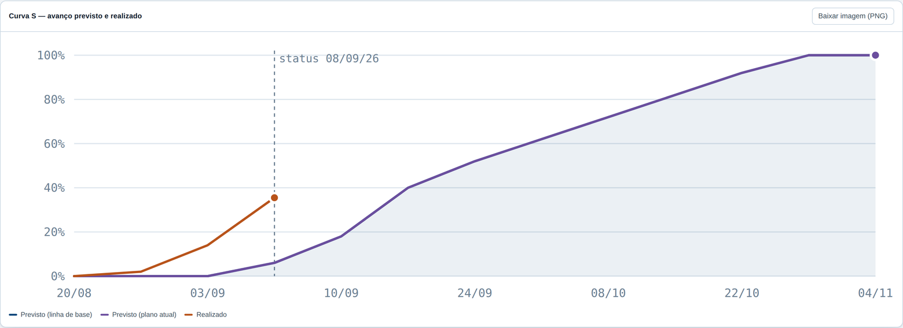

Cronograma que calcula
Datas saem do método do caminho crítico, não da sua planilha. Dependências com atraso, folgas por atividade e calendário de dias úteis com feriados.
15 dias grátis sem cartão de crédito
Do kickoff ao status report, no mesmo lugar: cronograma que calcula o caminho crítico, curva S com o avanço real e as folhas que você apresenta saindo prontas — sem passar pelo PowerPoint.

Demonstração
Um minuto pelo sistema: do portfólio ao status report, passando pelo cronograma com caminho crítico e pela curva S.
Datas saem do método do caminho crítico, não da sua planilha. Dependências com atraso, folgas por atividade e calendário de dias úteis com feriados.
Curva S de avanço físico contra a linha de base, com IDP e IDC calculados. O que já foi entregue conta na data em que foi entregue.
Kickoff, status report e matriz RACI em folha 16:9, e o cronograma inteiro em uma página. Com a sua marca, sem passar pelo PowerPoint.
Funcionalidades
Feito para quem entrega projeto de verdade: cada recurso existe porque uma reunião de status cobrou por ele.
Término–início, início–início, término–término e início–término, com atraso ou antecipação: 3TI+2d, 5II, 7TT-1d.
Passagem progressiva e regressiva a cada alteração. Folga total por atividade, e o que não pode atrasar fica evidente.
Durações em dias úteis, com a semana de trabalho e os feriados da sua operação saindo da conta.
Congele o plano aprovado e acompanhe o desvio. Cada versão guarda o que mudou de uma para a outra, atividade por atividade.
Previsto, linha de base e realizado na mesma escala. Sem custos na conta quando o seu contrato não tem custos.
Cadastro único de pessoas, compartilhado entre os cronogramas, com a carga diária e o alerta de superalocação.
Cada projeto classificado por tamanho, pelas horas previstas, e a situação ajustável à mão — porque nem todo projeto com indicador bom merece passar batido na sua apresentação.
Quem executa, quem responde, quem é consultado e quem é informado — pela sua equipe e pela do cliente, fase a fase. Sai em PDF para a ata e em imagem para a conversa.
Equipes, objetivo, escopo, premissas, o que fica fora, plano de comunicação, próximos passos e atividades macro — mesmo antes de existir cronograma. Vira um PDF 16:9 com a sua marca.
Folha 16:9 com indicadores, curva S, entregas, riscos e as atividades concluídas na semana. Em PNG, em PDF, ou por e-mail para os destinatários do projeto — com o PDF em anexo, saindo do seu domínio e com o envio registrado.
Um PDF com a capa consolidada da carteira e uma folha por projeto. Para a reunião de diretoria, não para o gerente.
O que aconteceu, no dia em que aconteceu, com tabelas que você monta ou traz de uma planilha. Vai para o cliente por e-mail, em PDF ou em imagem — sem a planilha paralela de sempre.
O cronograma inteiro numa imagem para colar no e-mail ou mandar pelo WhatsApp, com filtro por avanço quando ele é grande demais para caber legível.
Traga 50 atividades de uma vez pelo modelo em Excel, com fases, durações, predecessoras e recursos.
Um link por projeto, que o cliente responde sem criar conta nem instalar nada. O resultado volta para dentro da carteira, junto dos indicadores.
Status report
Uma página, no formato da apresentação, montada a partir do próprio cronograma — não de um slide que alguém precisa atualizar à mão.

Curva S
O avanço é medido pelo peso das atividades, e o que foi entregue adiantado conta na data da entrega — e não na data em que estava planejado.

Segurança e acesso
Cada cliente é uma conta isolada. Não é um filtro numa consulta que alguém pode esquecer: é a própria estrutura dos dados.
Os cronogramas ficam sob a conta da empresa, e as regras do banco só liberam projeto para quem é membro dela. Nenhuma outra empresa os alcança, e o suporte do MILEST só entra quando o seu administrador libera, por prazo e com registro.
Administrador, gerente e leitor. Quem só precisa acompanhar consulta e baixa relatórios, sem alterar nada.
O administrador da empresa cadastra a pessoa, entrega uma senha temporária e ela define a dela no primeiro acesso. Suspender corta o acesso na hora, sem apagar o histórico.
Todo dia, automaticamente, uma cópia completa dos seus projetos é gerada e guardada fora do sistema. Restaurar é escolher o arquivo — e dá para baixar a sua cópia quando quiser, sem pedir a ninguém.
Planos
A avaliação libera o produto inteiro — não é uma versão reduzida com o melhor escondido atrás do pagamento. E se você não seguir, seus cronogramas não somem: continuam visíveis para consulta e download.
Grátis15 dias, sem cartão
Para conhecer com um projeto seu, não com um exemplo pronto.
Sob consultamensal ou anual
Para a equipe que entrega projeto e presta contas toda semana.
Sob consultaanual
Para quem tem exigência de contrato, auditoria ou marca própria.
Os valores saem sob consulta enquanto fechamos as primeiras contas: o preço acompanha o tamanho da operação, e preferimos combinar isso conversando a publicar um número que não serve para o seu caso. O anual tem desconto sobre o mensal.
Sobre
O MILEST veio de uma rotina conhecida: o cronograma numa ferramenta, o avanço numa planilha e o status report num slide que alguém refaz toda semana. Três lugares para contar a mesma história — e três chances de os números não baterem.
A proposta é simples: um cronograma que calcula sozinho, um avanço que sai dele, e o relatório gerado do mesmo dado. O que você apresenta na reunião é o que está no plano, porque é literalmente a mesma origem.
Como começa
Preenche o formulário aqui embaixo contando que tipo de projeto acompanha. Leva um minuto.
Criamos a conta da sua empresa e o seu acesso de administrador — em até um dia útil, normalmente no mesmo dia.
Recebe o acesso, define sua senha e cadastra o time. Os 15 dias começam a contar aí, com tudo liberado.
Avaliação de 15 dias
Conte em duas linhas o tipo de projeto que você gerencia. Se quiser, a gente ajuda a montar o primeiro cronograma junto — em cima do seu caso, não de um exemplo genérico.
Perguntas frequentes
É uma ferramenta que reúne o planejamento e o acompanhamento de um projeto: o cronograma com as atividades e dependências, quem faz o quê, quanto já avançou e o que está atrasado. No MILEST, o cronograma, a curva S e o status report saem do mesmo dado, então os números da reunião batem com o plano.
Na prática, os dois termos são usados como sinônimos no Brasil: planejar escopo, prazo, custo e equipe, e depois controlar a execução contra esse plano. O MILEST cobre as duas pontas — o planejamento com caminho crítico e linha de base, e o controle com curva S, IDP, IDC e status report.
Não. O MILEST funciona no navegador, no computador de cada pessoa da equipe. Você entra com o e-mail da empresa e começa a usar.
Sim. Há um modelo em Excel para importar as atividades de uma vez, com fases, durações, predecessoras e recursos.
A avaliação é gratuita por 15 dias, sem cartão de crédito, com todas as funcionalidades liberadas. Depois disso, os planos Padrão e Corporativo são sob consulta, de acordo com o tamanho da operação.
Traga um cronograma seu e veja o status report sair pronto dele. Quinze dias bastam para saber se serve.